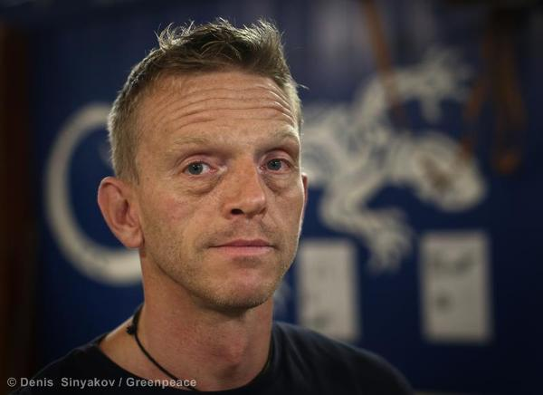

Sun Dec 22 2013
Arctic 30: Mannes Ubels
Fragments of Mannes' interview
My name is Mannes Ubels. 42 years old. I am from the Netherlands. I’ve been sailing for Greenpeace for 13 years now, as chief engineer on the ships for the last 7 years. And I was chief engineer of the Arctic sunrise when it was seized by the Russian authorities.
It’s actually quite a funny story, because I was about to join a company, which is well known in the Netherlands for ... they are fishtrolls, like floating factories that slowly empty the seas (or “slowly” because it’s actually in quite a rapid speed).
So I was about to join one of those companies.Then I met somebody who had been sailing for Greenpeace for 9 years as well. So he was a sailor. And we discussed what we were doing, what our plans were, and then he said, maybe you want to think twice about what you are going to do. And then he explained me the catastrophic effects of factory fishing. And he said, If I can get you on one of the Greenpeace ships, are you willing to try this, just to see what factory fishing is doing, because of course people there know. He said, it might give you the opportunity to see on the other side, on the other camp. So I said, OK, I am willing to do that, because I already was convinced that I shouldn’t do factory fishing.
So I did and I joined the ??? Greenpeace in late 2000’s. That was supposed to be a 4 month trip, but I stayed for 6 months. And after that trip they called me for the conversion of the Experanza, and that, from the technical point of view, was very interesting for me to do, so I said yes. And I liked it so much, I liked the people that I was working with so much, I liked the course of Greenpeace work, so I joined and I never left. Yes.
I think I’ve been in most of the campaigns. I’ve been in forest tree campaigns, ocean campaigns, nuclear campaigns, whaling campaigns. Of course over the time span of 13 years you will be in all the campaigns.
The whaling campaigns of course were quite interesting because I went to Antarctica twice in 2005, 2006 and 2007. It’s actually the first trip I did for
Greenpeace.
We started on the toxics in Baltic sea. And than we did forest tree, I got involved in an action trying to stop a ship entering a port in the Netherlands. And my part of the action was to occupy the anchor chain, once the ship was forced to drop its anchor. A few of my colleagues
were on the anchor chain for the whole night so the ship could not take the anchor back up. After a cold and rainy night they need somebody else to go up the anchor chain. As soon as I was on the weather changed, the sun started shining, and I was really comfortable just hanging or laying on the anchor chain. And that created a situation that was perfect for nice photographs, and they took a photo of me and it ended up in, I think, 24 newspapers in the Netherlands and every major newspaper all over the world.
So it was also because my name was under it and I thought, OK, it’s going to be quite hard to find a commercial job after this. And it was tropical woods from the great bear rainforests in 2001. So I did every major campaign.
I’ve been on the Esperanza for almost 8 years, 9 years in a row. For me it does not really matter on which ship I am. I just contact the office before I have to go and they say, are you willing to go on the Rainbow warrior? My last trip was on the Rainbow warrior before this. And for me it does not really matter where I go. I just join the ship and it’s nice to change between the ships. And the last trip I did on the Sunrise was, I think, 10 years ago, 2004.
Do for this trip I just called the office and they said, are you willing to join the Arctic sunrise? And I said, yea, It’s going to be interesting. I knew what the campaign was about, but of course for my job I am more interested in the technical challenges, because normally my job is purely in the engine room and with all the equipment, which is on the ship, and inflatable boats to help boat mechanic.
So I was actually only two weeks on the ship, when the ship was seized. So that was a very short trip on the Arctic Sunrise, I think, my shortest trip ever.
#
Life in SIZO (pre-trial detention centre)
Well, I think we all had quite an interesting life in the Sizo, but it’s kind of a ??? situation, but I think that the most important or the biggest threats in the Sizo is that you get bored and that you have to much time to think and time will pass very slowly.
So as soon as I got in, I knew I had to get myself into a rhythm and stick to this rhythm. And I was quite lucky that I joined two cellmates. One of them was really into sports, He was quite young, I think 23 years old, and he was quite big, he had a lot of muscles, but his diet was wrong and also the way he was exercising was wrong, so he had a lot of questions like why he couldn’t get dons???, why he had too much fat. He was strong, but not very fit. And of course it’s quite difficult to stay fit in the Sizo.
So I set a workout for him and for myself. Because just before I joined the ship I got my crossfit trainer certificate and I’ve been doing crossfit for over a year.
There are actually a lot of exercises you can do in the Sizo, in a small space. So I started setting up these exercises in the morning during our walk. When we were going outside, I could mak 67 exercises, than in the evening in our room I set up a workout. And after that, from the goodybags I got from Greenpeace support team, I was making a salad to show him how to eat more healthy even though you are in prison. Because he thought, if I need to grow, I need to eat. And he thought it didn’t matter what he eats, so he was eating the wrong things. And then he started asking his friends as well to bring the proper stuff into the prison. So it was really good! And he noticed, for the short time we’ve been there, that he got more fit, more endurance.
So I hope that’s my legacy in the prison. And the thing is, because I wrote the exercises to him, and he was part of a group (I think they got into Sizo all at the same time), he was also telling his mates, OK, I do this exercise program and I start to feel fit. So I think he was also selling it to his mates which were in other cells. So it was interesting and it also kept me busy. And it kept me fit.
#
Arctic Sunrise. Its current condition and situation.
I’ve been to the ship one time, I think that was the 5th of November, quite shortly after were in, because I sent a letter to the investigators’ team, or the investigative committee, that we were taken of the ship and they told us, as far as I knew it, we will be back in 4 hours.
So we just left it. We all had to leave. So we left it in a way that it could actually stay for a few hours by itself. Actually it’s never a clever thing to do to leave the ship without anybody onboard. But OK, the 4 hours turned into days, and then into weeks. So I thought, OK, it’s not going to be great for the ship, because I have no insurance that somebody will take care of the ship.
So I wrote a letter to the investigative committee that they took responsibility of the ship by taking us all off. You can’t leave a ship by itself. The generators which are running, you have to monitor them, there will be alarms, there can be sea water leakages. There are so many systems on the ship, just the heating, the fresh water, all the electrical systems, the air compressors running. So I wrote a letter that I really wanted to go back to the ship to do maintenance and to make sure everything was still in the working order, that I could switch off some systems, that didn’t need to be running. Just to get a clear picture of what was happening to the ship. And then the investigative committee granted me one day on the ship. They didn’t tell me, they just took me out of the prison and brought me to the ship. And there I was met by a lot of uniforms, which I can’t really identify. And the started asking me all kinds of questions, like “how long do you need to solve all the problems and to make sure that the ship is running again for the next period. And I said, I really can’t, because you can’t leave a ship just by itself. And I made just a short list of all the things I needed to do. And I said, if I do these things and I get a time to do a proper check, than the ship will be in a situation that I will go to bed with a good feeling.
But the next day it will all start all over again, because you have to do daily checks and you have to monitor everything which is running. So they said, OK, you make a list, how long do you need? And I said, well, I think it’s
going to take at least one full day to do the maintenance. And they said, you don’t have a full day. I said, OK, then I do whatever I can, but I don’t take the responsibility, the responsibility is yours, but I do whatever I can.
So they gave me one engineer of the Coast guard, and he was walking around with me. And while we were doing a round, I already noticed ... So I was doing this round the engineer from the Coast guard and I checked the oil of the generator and it was below low level, so they probably never checked it. The oil of the air compressor was black and too thin. The pomp of the grey water system was continuously running and normally it runs only when it’s operated by flow switch, so it should start and stop by itself, but if the filter is blocked and the level in the tank is going up, then the pump just keeps on running but it’s not doing anything.
So the pump is really hard for the for the sewing system. It was the same thing as the pump was running but not pumping anything. And I told them, this is only what I see now. You don’t give me enough time to really do a proper check, but there will be damage on the ship.
And so I asked them who is taking responsibility? And Coast Guard said it’s the Investigative committee. I said, can you make a call, so I know someone has responsibility? And they called the Investigative committee, and they said, nonono, we don’t want responsibility, we don’t take it. And the Coast Guard, we don’t want it as well. So I got a little bit angry there, like, you can’t take me of the ship! I am willing to stay here, even by myself, and take care of the ship, Just to know that if I am aloud to go, which at that point I thought would happen quite soon, because of the ridiculous charges, then the ship will be at least ready forus to go.
Because otherwise even if the ship is in salt water, and salt water is highly corrosive, if nobody monitors the ship even for a few hours, it might end up with a leak in the pipeline just filling up the engine room, and the ship just might sink.
My lawyer told me that actually happened a few years ago in the same sort of situation when there was no one on the ship and the shi just
sunk. And I was a bit afraid that we would end up in a situation where we were in prison, the ship would have like a lot of damage, that they would start searching for something else, because they did not want to take responsibility of the ship being sunk. And then they would come up with
more fantasies just to say, OK, it was their right to take the ship and even though the ship had damage, they did not have to take responsibility or pay for the damage.
SO the end of the story was that I wrote down to this engineer, and this engineer was actually quite a willing guy, and I trusted him, and I showed him how to do the oil change on the generators, what to monitor, what the normal pressure was, what the normal temperatures were, if he had to do oil change, how to change over to another generator, where he could find the oil, where to look in the engine room in case there was a leakage that he could find it in an early stage. So I had to leave the ship like that.
One other example was the day we were arrested or taken off the ship, the chef had taken frozen fish out of the freezer and he put it out of the freezer in the dry store just for the fish to defrost. It was like 10 days ago, so the fish was rotting, the potatoes were rotting. And there was still food in the galley which was rotting, like they obviously did not take very good care of the ship. But the engineer did. But after that I had no chance to go back and ??? bid to the captain.
He had been a few times back to the ship. And he said that the generators were still running, because when they stop there is no heating on the main engine anymore, and the main engine might start leaking cooling water damaging the bearings inside the engine, the compressor will stop allowing seawater to enter via the propeller shaft. So it’s a bit scary. Like, I hoped this engineer really took his responsibility, but I can also imagine that it was not really high on the priority list. It’s a bit of mystery what the state of the ship is now.
I think what they took, what I understood from Pete, the captain, that they took some of the equipment from the bridge, in which they could find history where the ship had been. It’s related to navigation. And also they took equipment off the ship that we used in previous campaigns, maybe a hydrophone to make underwater recordings. I don’t know exactly what the equipment was. I think they just took everything that they did not know or could not identify and felt, OK, we just take it off and then we find out later what it is. Apart from our personal equipments of course, because they took all of it, all the electronics and computers.
I hope... I think, according to the law, because the ship was evidence in our case and since the case is stopped, the ship... Well actually, the
ITLOS determine that the ship and the crew had to be freed and it’s illegal to keep them, because the arrest was illegal. So. Then they still kept the ship as part of the evidence.
Since the case stops now, or at least the investigation is stopped and the case is terminated, we should get the ship back. So I think what will happen is that after we all got our amnesty and we are all out of the country, they will release the ship, probably in coordination with Greenpeace International. And I think Greenpeace International has to send experts, insurance experts, who can really do a good examination of the ship and see in what state it is, if there is damage caused by the detention. And after he makes a very accurate report of the state of the ship, I think the ship will be towed back to the Netherlands. Because I think it’s impossible to sail it back, because you have to go over the North Sea, which is like very bad weather in this time of the year, or actually always bad weather.
So the ship has to go back to the Netherlands to do maintenance on it. In short period you can’t really determine if the ship is safe enough to sail, because if you get an engine failure or generator failure, you might end up on the cost. So to be safe, the ship will be after the expertise towed back to the Netherlands, where we can do a really good job on the maintenance.
I think .. I have not seen much justice. And that’s a very scary thing. Year. I think the whole accusation normally it could not stand, and you can see that ITLOS rules against it. Internationally the response was so .. how to say this.. English is not my first language, so I run out the proper translations sometimes.
I think the reaction of international community shows that there is no justice in this whole case. The charges are ridiculous and I think the only purpose this had was to really show us, like in theory you might have the rights for nonviolent demonstrations, but in practice you have not. And then just to come up with the charge first of piracy, then of hooliganism, making up tools or changing tools into weapons it’s just did not make sense. And they knew, we knew, everybody knew. And still the investigation was continuing. So it’s scary. Itäs scary and it does not give me the feeling there is justice here if you are on the wrong side of the line. Yes.
Mannes Ubels

Mannes is from Oudeschip, Netherlands.
Mannes is a highly skilled member of the crew aboard the Arctic Sunrise with a passion for engineering.
He is an experienced sailor and has travelled to both poles to document climate change and Japanese whaling.
Mannes’ friends describe him as a loyal and gentle man with a green heart and a dry sense of humour. He is dedicated to non-violent peaceful action.
Daniel Beilinson
This interview was taken by Daniel Beilinson for Greenpeace International and an independent human rights media project OvdInfo.org.
References
The Netherlands asked the International Tribunal for the Law of the Sea (ITLOS) to order Russia to release a Greenpeace ship and the activists who were on board.
Russia subsequently indicated that it would not participate in the tribunal since the matter was an issue of internal Russian law involving criminal acts against Russian property.
Nick Cobbing is a photographer specialising in the environment, science and ecology, with particular reference to the Arctic region.
Copyright
Copyright © 2014
Mannes Ubels, Daniel Beilinson
This article is distributed under the terms of the Creative Commons Attribution License, which permits unrestricted use and redistribution provided that the original author and source are credited.
See
Creative Commons Attribution License.